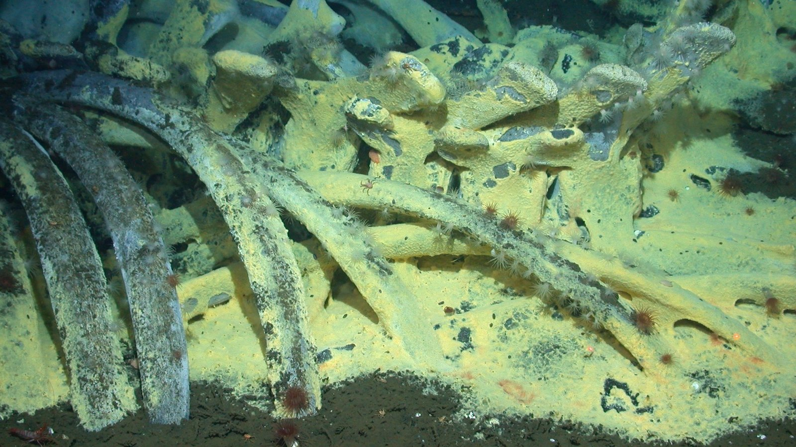
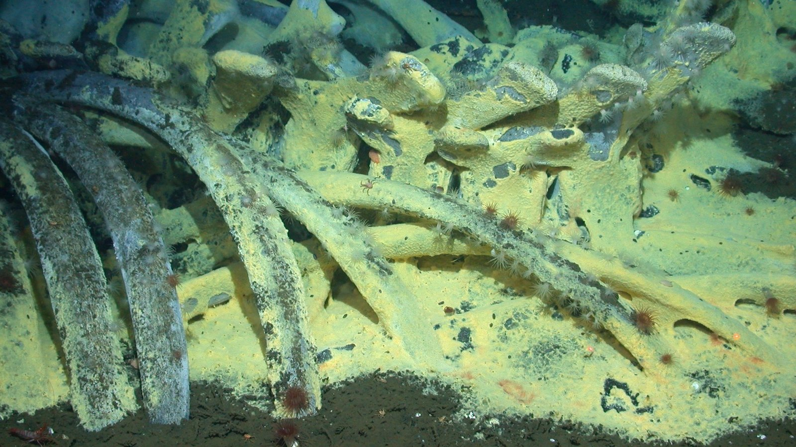

Whale Fall
Feast of the Decade

About Whale Falls
A whale fall is when a dead whale's carcass falls to depths past 3,290 feet, usually to the midnight and abyssal zones.
Once they reach the sea floor, unique ecosystems form in and around it, often lasting for months to decades due to their
large size and feeding thousands of animals. Food is usually pretty scarce in at these depths, so when a whale fall occurs
it draws in a diverse crowd of organisms.
The whale won't be fully intact, as other creatures will have already consumed parts of it, but bones, blubber, and several
internal organs will still remain. Many of the species that are a part of these whale fall ecosystems are similar to those
found in hydrothermal vents.
There are three general stages that occur once the carcass reaches the sea floor:
First, scavengers, such as crabs, certain fish, hagfishes, and sleeper sharks (depending on depth) move to the carcass.
They consume the soft tissue, eating about 80-130lbs per day. This can last for about 4 months for a 5-ton carcass, and
about 10 months to 2 years for a 35-ton carcass. Then only the skeleton is left.
In the second stage, worms, crustaceans, and mollusks (like snails) cover the skeleton. They eat the remaining parts,
even the sediment around the carcass where decomposing tissue has fallen.
The third, and longest, stage can last more than 10-50 years. Bones produce sulfide because of chemosynthetic bacteria.
They produce sulfide from using sulfate to break apart lipids from the bones. The sulfide then fuels groups of more
bacteria, tube worms, and mussels.
Learn more about whale falls at these sites:
All you need is biology - What lies beyond the death of a whale?
NOAA - What is a whale fall?
Smithsonian - Life after Whale